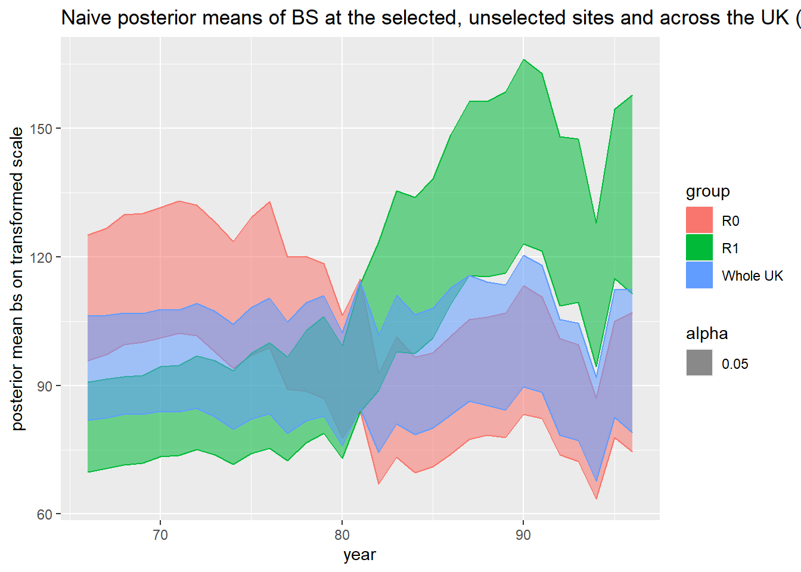

Chapter 8 But can the data be trusted
This chapter considers some of the issues that will arise when dealing with ‘real data’. Data will commonly have missing values and may be measured with error. This error might be random or may be due to systematic patterns in how it was collected. From this chapter, the reader will have gained an understanding of the following topics:
- Classification of missing values into missing at random or not at random.
- Methods for imputing missing values.
- Various measurement models including classical and Berkson.
- The attenuation of regression coefficients under measurement error.
- Preferential sampling, where the process that determines the locations of monitoring sites and the process being modelled are in some ways dependent.
- How preferential sampling can bias the measurements that arise from environmental monitoring networks
Solutions to Selected Exercises
PLACEHOLDER: Repeat the Black Smoke analysis conducted in Watson et al. 2019. in the “naive” model.
If INLA is not already installed, it needs to be done manually (https://www.r-inla.org/download-install):
install.packages(
"INLA",
repos = c(getOption("repos"), INLA = "https://inla.r-inla-download.org/R/stable"),
dep = TRUE
)After INLA is installed load all the necessary packages.
library(INLA)## Loading required package: Matrix## Loading required package: foreach## Loading required package: parallel## This is INLA_22.12.16 built 2022-12-23 13:24:10 UTC.
## - See www.r-inla.org/contact-us for how to get help.library(mvtnorm)
library(boot)##
## Attaching package: 'boot'## The following object is masked from 'package:nimble':
##
## logitlibrary(geoR)## --------------------------------------------------------------
## Analysis of Geostatistical Data
## For an Introduction to geoR go to http://www.leg.ufpr.br/geoR
## geoR version 1.9-2 (built on 2022-08-09) is now loaded
## --------------------------------------------------------------library(reshape2)
library(sp)
library(ggplot2)Assuming the data is held in the file BlackSmokePrefData.csv in a /data directory:
BlackSmokePrefData <- read.csv("data/BlackSmokePrefData.csv")
head(BlackSmokePrefData)## site east north AMEAN66 AMEAN67 AMEAN68 AMEAN69 AMEAN70 AMEAN71
## 1 ADDLESTONE 1 505200 164600 92 103 68 47 47 45
## 2 BARNSLEY 8 434800 409400 NA NA NA NA NA NA
## 3 BARNSLEY 9 437000 405500 NA NA NA NA NA NA
## 4 BOLTON 24 371500 409200 132 108 75 77 78 74
## 5 BRADFORD 6 416300 432900 202 151 122 110 90 118
## 6 CARDIFF 12 319300 177300 NA NA NA NA NA NA
## AMEAN72 AMEAN73 AMEAN74 AMEAN75 AMEAN76 AMEAN77 AMEAN78 AMEAN79 AMEAN80
## 1 52 41 36 31 33 24 20 17 11
## 2 NA NA NA NA NA NA NA NA NA
## 3 NA NA NA NA 23 18 19 19 12
## 4 149 137 NA NA NA NA NA NA NA
## 5 172 191 74 NA NA NA NA NA NA
## 6 NA NA NA NA NA NA 24 19 12
## AMEAN81 AMEAN82 AMEAN83 AMEAN84 AMEAN85 AMEAN86 AMEAN87 AMEAN88 AMEAN89
## 1 15 9 8 15 12 10 13 7 9
## 2 NA NA NA NA NA NA NA NA NA
## 3 19 NA NA NA NA NA NA NA NA
## 4 NA NA NA NA NA NA NA NA NA
## 5 NA NA NA NA NA NA NA NA NA
## 6 10 11 16 19 18 14 11 9 11
## AMEAN90 AMEAN91 AMEAN92 AMEAN93 AMEAN94 AMEAN95 AMEAN96
## 1 11 6 NA NA NA NA NA
## 2 NA 13 6 11 6 6 5
## 3 NA NA NA NA NA NA NA
## 4 NA NA NA NA NA NA NA
## 5 NA NA NA NA NA NA NA
## 6 12 12 9 11 9 19 11## standardize location coordinates
sd_x <- sd(BlackSmokePrefData[, c(2)])
sd_y <- sd(BlackSmokePrefData[, c(3)])
BlackSmokePrefData[, 2] <- BlackSmokePrefData[, 2] / sd_x
BlackSmokePrefData[, 3] <- BlackSmokePrefData[, 3] / sd_y We need to reshape the data to have one observation per row, as required by INLA.
yearmeans = colMeans(BlackSmokePrefData[,-c(1, 2, 3)], na.rm = T) ## save means for each year
BlackSmokePrefData <-
melt(
BlackSmokePrefData,
id.vars = c(1, 2, 3),
variable.name = 'year',
value.name = 'bsmoke'
)
BlackSmokePrefData$year = as.numeric(as.character(factor(BlackSmokePrefData$year, labels =
66:96)))
## standardize by mean of mean of each year to make it unitless
BlackSmokePrefData$bsmoke = BlackSmokePrefData$bsmoke / mean(yearmeans)
## log-transform to eliminate right skew
BlackSmokePrefData$bsmoke = log(BlackSmokePrefData$bsmoke)Producing the 2-d mesh of the UK:
no_sites = as.numeric(length(unique(BlackSmokePrefData$site))) # number of sites
no_T = as.numeric(length(unique(BlackSmokePrefData$year))) # number of years
ncol = 100 # grid for projection
nrow = 100
L = nrow * ncol # number of grid sites
# Form the regular mesh #
# Create a rough convex boundary for the UK #
# Form the grid independently from the sites to avoid preferential grid selection #
UK_domain = cbind(c(2, 7.7, 7.7, 6, 4, 1), c(0.5, 0.5, 6, 13.5, 13.5, 12))
hull = inla.nonconvex.hull(cbind(BlackSmokePrefData$east, BlackSmokePrefData$north))
cutoff_dist = 16000 / sd_x # 16km as min edge
max.edge = 100000 / sd_x # 100km max edge as in Shaddick and Zidek
# NOTE: JOHNNY, I HAD TO COMMENT THE CUTOFF VARIABLE CAUSE OTHERWISE IT WOULDN'T WORK
mesh = inla.mesh.2d(
loc = cbind(BlackSmokePrefData$east, BlackSmokePrefData$north),
boundary = hull,
offset = c(0.1, 0.2),
max.edge = c(cutoff_dist, 0.5),
#cutoff = c(cutoff_dist, 1),
min.angle = 26
)
plot(mesh)
points(BlackSmokePrefData$east, BlackSmokePrefData$north, col = "red")
Now we define and fit our INLA model.
spde_obj = inla.spde2.pcmatern(
mesh = mesh,
alpha = 2,
prior.range = c(0.04, 0.05),
prior.sigma = c(1, 0.01),
constr = T
)
A_proj = inla.spde.make.A(
mesh = mesh,
loc = as.matrix(cbind(
BlackSmokePrefData$east, BlackSmokePrefData$north
)),
group = BlackSmokePrefData$year - 65,
# group membership needs to be 1:no_T
n.group = no_T
)
s_index = inla.spde.make.index(name = "spatial.field",
n.spde = spde_obj$n.spde,
n.group = no_T)
time = (1:no_T) / no_T
time2 = time ^ 2
# create the stack object for estimating observation process y #
cov_y = data.frame(
year = rep(time, each = no_sites),
year_2 = rep(time2, each = no_sites),
spatial_ind = rep(1:no_sites, times = no_T),
spatial_ind2 = no_sites + rep(1:no_sites, times = no_T)
) # site-specific random intercepts
# Needs copies to include covariate twice
s_index_copy = s_index
names(s_index_copy) = c('spatial.field.copy',
"spatial.field.group.copy",
"spatial.field.repl.copy")
s_index_copy2 = s_index
names(s_index_copy2) = c('spatial.field.copy2',
"spatial.field.group.copy2",
"spatial.field.repl.copy2")
stack_y_est = inla.stack(
data = list(
y = BlackSmokePrefData$bsmoke,
#single model
alldata = cbind(BlackSmokePrefData$bsmoke, NA, NA),
Ntrials = rep(0, times = length(BlackSmokePrefData$bsmoke))
),
#joint model
A = list(A_proj, A_proj, A_proj, 1),
effects = list(
c(s_index, list(Intercept = 1)),
c(s_index_copy, list(Intercept_copy = 1)),
c(s_index_copy2, list(Intercept_copy2 = 1)),
cov_y
),
tag = 'y_est'
)
formula_naive = y ~ -1 + Intercept +
f(spatial.field, model = spde_obj) +
f(spatial.field.copy, I(spatial.field.group.copy / no_T), model = spde_obj) +
f(spatial.field.copy2, I((spatial.field.group.copy2 / no_T) ^ 2), model = spde_obj) +
I(spatial.field.group / no_T) + I((spatial.field.group / no_T) ^ 2) +
f(year, model = 'ar1') +
f(spatial_ind,
model = "iid2d",
n = no_sites * 2,
constr = TRUE) + #random site-specific intercepts
f(spatial_ind2, year, copy = "spatial_ind")
theta.ini = c(
1.597900,
-1.277423,
-0.443820,
-1.441220,
0.036510,
-1.441336,
0.016919,
4.462918,
1.437147,
4,
4,
4
)
out.naive = inla(
formula_naive,
family = 'gaussian',
data = inla.stack.data(stack_y_est),
control.predictor = list(A = inla.stack.A(stack_y_est), compute = F),
control.compute = list(dic = F, config = T, cpo = F),
control.inla = list(strategy = "gaussian", int.strategy = 'eb'),
control.mode = list(theta = theta.ini, restart = T),
verbose = T,
num.threads = 2
)We can now take posteriors from the model.
m_samples = 50
samp <- inla.posterior.sample(m_samples, out.naive)
for (i in 1:m_samples)
{
samp[[i]]$latent = samp[[i]]$latent[-c(grep('Predictor', rownames(samp[[i]]$latent), fixed = T)), ]
}Finally, summarize and plot the outputs:
stepsize = 5000 / sd_x
nxy = round(c(diff(range(
BlackSmokePrefData$east
)),
diff(range(
BlackSmokePrefData$north
))) / stepsize) ## how many points?
proj_grid = inla.mesh.projector(
mesh,
xlim = range(BlackSmokePrefData$east),
ylim = range(BlackSmokePrefData$north),
dims = nxy
)
A.grid = inla.spde.make.A(mesh,
loc = cbind(BlackSmokePrefData$east, BlackSmokePrefData$north))
## define placeholders
tmp2 = matrix(0, nrow = no_T, ncol = mesh$n)
year = (1:no_T) / no_T
year2 = year ^ 2
Post_Array2 = array(0, dim = c(m_samples, no_T, mesh$n))
Post_Sites_Array2 = array(0, dim = c(m_samples, no_T, dim(BlackSmokePrefData)[1]))
residuals_array = array(0, dim = c(m_samples, no_T, dim(BlackSmokePrefData)[1]))
RI_array = array(0, dim = c(m_samples, no_T, dim(BlackSmokePrefData)[1])) # random intercepts
RS_array = array(0, dim = c(m_samples, no_T, dim(BlackSmokePrefData)[1])) # random slopes
for (i in 1:m_samples) {
# Creating predictions for Y process
for (j in 1:no_T)
# loop over the years
{
Post_Array2[i, j, ] <- samp[[i]]$latent['Intercept:1'] + # Intercept
samp[[i]]$latent[which(startsWith(prefix = 'year:', x = names(samp[[i]]$latent)))][j] * year[j] + # linear fixed effect
#samp[[i]]$latent['year_2'] * year2[j] + # quadratic fixed effect
as.numeric(samp[[i]]$latent[which(startsWith(prefix = 'spatial.field:', x = names(samp[[i]]$latent)))]) + # Spatial Intercept
as.numeric(samp[[i]]$latent[which(startsWith(prefix = 'spatial.field.copy:', x = names(samp[[i]]$latent)))]) * year[j] + # Spatial linear slope
as.numeric(samp[[i]]$latent[which(startsWith(prefix = 'spatial.field.copy2:', x = names(samp[[i]]$latent)))]) * year2[j] # Spatial quadratic slope
# Project onto the site locations and add random site-specific effects #
Post_Sites_Array2[i, j, ] = as.numeric(A.grid %*% Post_Array2[i, j, ]) +
as.numeric(samp[[i]]$latent[which(startsWith(prefix = 'spatial_ind:', x = names(samp[[i]]$latent)))[1:no_sites]]) + # random Intercept
as.numeric(samp[[i]]$latent[which(startsWith(prefix = 'spatial_ind2:', x = names(samp[[i]]$latent)))[no_sites +
(1:no_sites)]]) * year[j] # random slope
# Extract the random intercepts #
RI_array[i, j, ] = as.numeric(samp[[i]]$latent[which(startsWith(prefix = 'spatial_ind:', x = names(samp[[i]]$latent)))[1:no_sites]])
# Extract the random slopes #
RS_array[i, j, ] = as.numeric(samp[[i]]$latent[which(startsWith(prefix = 'spatial_ind2:', x = names(samp[[i]]$latent)))[no_sites +
(1:no_sites)]])
}
}
## summarizing
Post_mean2 <-
t(apply(Post_Array2, c(2, 3), function(x) {
mean(x, na.rm = TRUE)
}))
Post_sd2 <-
t(apply(Post_Array2, c(2, 3), function(x) {
sd(x, na.rm = TRUE)
}))
Post_LCL2 <-
apply((apply(Post_Array2, c(1, 2), function(x) {
mean(x, na.rm = TRUE)
})), 2, quantile, probs = c(0.025))
Post_UCL2 <-
apply((apply(Post_Array2, c(1, 2), function(x) {
mean(x, na.rm = TRUE)
})), 2, quantile, probs = c(0.975))
RI_array <-
t(apply(RI_array, c(2, 3), function(x) {
mean(x, na.rm = TRUE)
}))
RS_array <-
t(apply(RS_array, c(2, 3), function(x) {
mean(x, na.rm = TRUE)
}))
## placeholders for uniform grid posterior blacksmoke values (not necessarily in dataset)
post_Matrix_grid_mean2 = array(NA, dim = c(nxy[1], nxy[2], no_T))
post_Matrix_grid_sd2 = array(NA, dim = c(nxy[1], nxy[2], no_T))
for (i in 1:no_T)
{
post_Matrix_grid_mean2[, , i] = inla.mesh.project(proj_grid, Post_mean2[, i])
post_Matrix_grid_sd2[, , i] = inla.mesh.project(proj_grid, Post_sd2[, i])
}
## placeholders for observed (R1 = active, R0 = inactive) site blacksmoke values
R1_results2 = matrix(NA, nrow = no_T, ncol = 4) # prediction means, sd, LCL, UCL
colnames(R1_results2) = c('predciction mean', 'prediction sd', 'LCL', 'UCL')
R0_results2 = matrix(NA, nrow = no_T, ncol = 4) # prediction means, sd, LCL, UCL
colnames(R0_results2) = c('predciction mean', 'prediction sd', 'LCL', 'UCL')
Grid_results2 = matrix(NA, nrow = no_T, ncol = 4) # prediction means, sd, LCL, UCL
colnames(Grid_results2) = c('predciction mean', 'prediction sd', 'LCL', 'UCL')
BlackSmokePrefData_original <-
read.csv("data/BlackSmokePrefData.csv") ## need original columns here
for (j in 1:no_T)
{
R1_results2[j, 1] = mean(Post_Sites_Array2[, j, which(!is.na(BlackSmokePrefData_original[, 3 +
j]))], na.rm = T)
R1_results2[j, 2] = sd(apply(Post_Sites_Array2[, j, which(!is.na(BlackSmokePrefData_original[, 3 +
j]))], c(1), mean, na.rm = T))
R1_results2[j, 3] = quantile(apply(Post_Sites_Array2[, j, which(!is.na(BlackSmokePrefData_original[, 3 +
j]))], 1, mean, na.rm = T), probs = 0.025)
R1_results2[j, 4] = quantile(apply(Post_Sites_Array2[, j, which(!is.na(BlackSmokePrefData_original[, 3 +
j]))], 1, mean, na.rm = T), probs = 0.975)
R0_results2[j, 1] = mean(Post_Sites_Array2[, j, which(is.na(BlackSmokePrefData_original[, 3 +
j]))], na.rm = T)
R0_results2[j, 2] = sd(apply(Post_Sites_Array2[, j, which(is.na(BlackSmokePrefData_original[, 3 +
j]))], c(1), mean, na.rm = T))
R0_results2[j, 3] = quantile(apply(Post_Sites_Array2[, j, which(is.na(BlackSmokePrefData_original[, 3 +
j]))], 1, mean, na.rm = T), probs = 0.025)
R0_results2[j, 4] = quantile(apply(Post_Sites_Array2[, j, which(is.na(BlackSmokePrefData_original[, 3 +
j]))], 1, mean, na.rm = T), probs = 0.975)
}
for (i in 1:no_T)
{
Grid_results2[i, 1] = mean(post_Matrix_grid_mean2[, , i], na.rm = T)
Grid_results2[i, 2] = mean(post_Matrix_grid_sd2[, , i], na.rm = T)
}
Grid_results2[, 3] = Post_LCL2
Grid_results2[, 4] = Post_UCL2
## Revert to the original scale (exponentiating and scaling up)
Grid_df_2 = data.frame(
y = exp(c(
Grid_results2[, 1], R1_results2[, 1], R0_results2[, 1]
)) * mean(yearmeans),
x = rep(66:96, times = 3),
ymin = exp(c(Post_LCL2, R1_results2[, 3], R0_results2[, 3])) *
mean(yearmeans),
ymax = exp(c(Post_UCL2, R1_results2[, 4], R0_results2[, 4])) *
mean(yearmeans),
group = c(
rep('Whole UK', times = 31),
rep('R1', times = 31),
rep('R0', times = 31)
)
)
## plotting
Grid_plot_2 = ggplot(aes(
x = x,
y = y,
ymin = ymin,
ymax = ymax,
alpha = 0.05
), data = Grid_df_2) +
geom_ribbon(aes(
colour = group,
alpha = 0.05,
fill = group
)) +
xlab('year') + ylab('posterior mean bs on transformed scale') +
ggtitle(
'Naive posterior means of BS at the selected, unselected sites and across the UK (R1, R0 and Whole UK resp.). '
)
Grid_plot_2